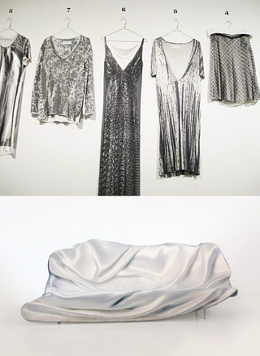

There is a multitude of different screen sizes across phones, “phablets”, tablets, desktops, game consoles, TVs, even wearables. Screen sizes will always be changing, so it’s important that your site can adapt to any screen size, today or in the future.
Arguably the most famous silhouette
Margiela Tabi

Origin Story
“The Tabi boot is the most important footprint of my career: it’s recognisable, it still goes on after 25 years, and it has never been copied.” Arguably the most famous quote from the reclusive Martin Margiela, his high-regard for the infamous Tabi speaks volumes—especially when considering his immense archive and enduring influence. When the split-toed footwear debuted during Margiela’s inaugural Spring/Summer 1989 runway show, the clove toed shoe shocked the fashion world to its core. Yet, season after season, the silhouette returned and despite reservations continued to sell. While the Tabi is deeply intertwined with Margiela’s legacy, to claim that the Tabi is wholly unique is a drastic overstatement. Not only have others explored the concept of split-toed footwear, but the Tabi itself precedes Margiela by hundreds of years. The Tabi dates back to the 15th century, when Japan began importing cotton from China. While the Tabi is deeply intertwined with Margiela’s legacy, to claim that the Tabi is wholly unique is a drastic overstatement. Not only have others explored the concept of split-toed footwear, but the Tabi itself precedes Margiela by hundreds of years. The Tabi dates back to the 15th century, when Japan began importing cotton from China.
Footprint
"Martin's first collection was incredible... it was wild, and underground, and when the first look came out I didn’t know what to think" – GeertBruloot
Worn on the feet of the models at that very first show were the shoes that have become one of fashion’s most recognizable footprints: Margiela’s interpretation of the split-toed Japanese tabi sock, the Tabi boot. In fact, Margiela drenched his models in red paint, so that the unusual footprints they left behind were clearly visible on the white catwalk; as he told Brulot, "I thought the audience should notice the new footwear. And what would be more evident than its footprint?" Margiela later turned this first, stained runway – decorated with the steps of the models – into a waistcoat which became the opening look of his next (A/W89) show, held together by brown scotch tape. Ever since, the Tabi shoe has become one of the most iconic pieces of all time.
- 